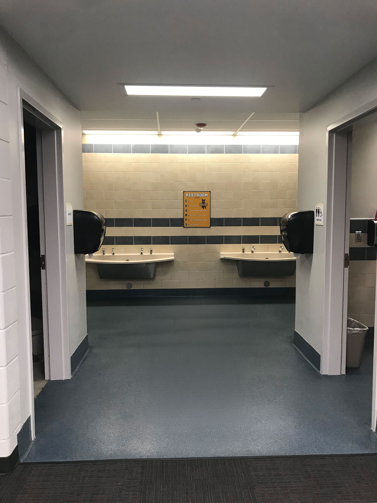
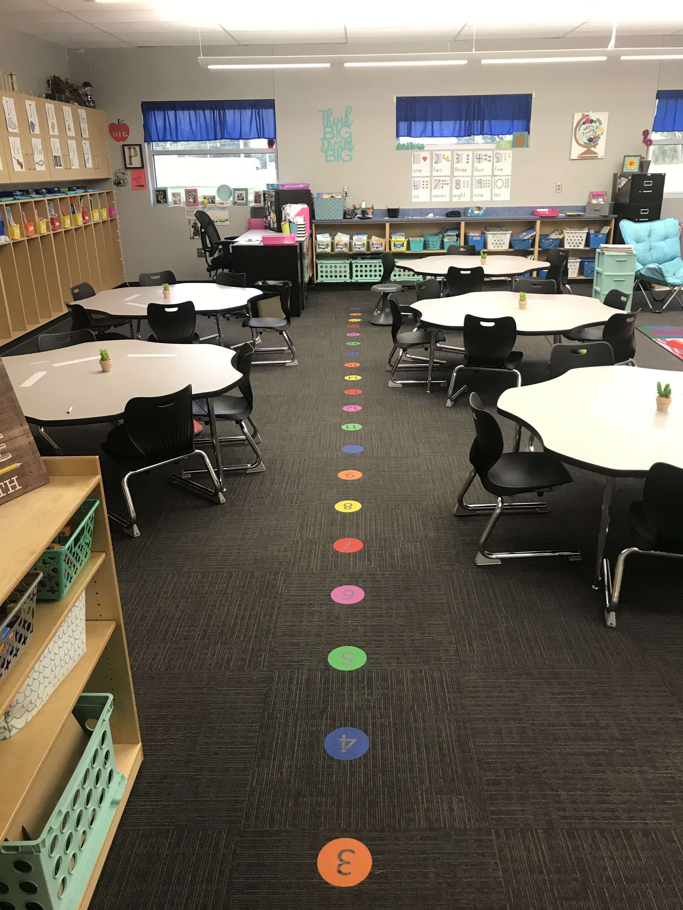

Our Services
Comprehensive commercial cleaning and facility solutions customized to your business needs, schedule, and budget.
Tailored Solutions for Your Facility
Every facility is unique, and so are your cleaning needs. We work with you to create a customized service plan that fits your schedule, addresses your specific requirements, and stays within your budget. Whether you need daily janitorial services, periodic deep cleaning, or specialized facility maintenance, we have the expertise and flexibility to deliver.
Janitorial Services
Comprehensive daily cleaning and maintenance for your facility. We handle everything from trash removal to restroom sanitation, ensuring your workspace is clean and inviting every day.
- Daily or scheduled cleaning
- Restroom sanitation
- Break room maintenance
- Trash & recycling removal
- Surface disinfection

Daily Building Cleaning
Regular cleaning services that keep your facility looking professional. Consistent care that maintains high standards day in and day out.
- Dusting & surface cleaning
- Vacuuming & mopping
- Window & glass cleaning
- High-touch point sanitization
- Lobby & common area care

Schools
Dependable cleaning support for schools, classrooms, offices, and shared campus spaces. We help educational facilities stay clean, healthy, and ready for students, staff, and visitors every day.
- Classroom cleaning and desk sanitizing
- Restroom cleaning and supply restocking
- Hallway, entryway, and common area upkeep
- High-touch point disinfection for healthier spaces
- Flexible after-hours and break-period scheduling

Hard Surface Floor Maintenance
Expert care for all types of hard flooring including tile, vinyl, and concrete. We restore and maintain the appearance of your floors.
- Stripping & waxing
- Buffing & polishing
- Deep scrubbing
- Grout cleaning
- Sealing & protection

Carpet Steam Cleaning
Professional carpet cleaning that removes dirt, stains, and allergens, extending the life of your carpeting and improving air quality.
- Hot water extraction
- Stain treatment
- Deodorizing
- Fast drying
- Traffic lane treatment

Warehouse Cleaning
Specialized cleaning for industrial and warehouse facilities. We understand the unique challenges of large-scale spaces.
- Floor sweeping & scrubbing
- Dock area cleaning
- High-bay dusting
- Break room & office areas
- Flexible scheduling

Facility Maintenance
Ongoing maintenance services that keep your facility in top condition beyond just cleaning.
- Light bulb replacement
- Consumables restocking
- Minor repairs coordination
- Preventive maintenance
- Regular inspections

Day Porter Service
On-site support during business hours for immediate needs. A dedicated professional to maintain your facility throughout the day.
- Real-time maintenance
- Lobby & restroom monitoring
- Spill response
- Meeting room setup
- Customer-facing presence

Event Setup & Breakdown
Professional setup and breakdown services for your events, meetings, and special occasions.
- Room setup & configuration
- Post-event cleanup
- Furniture arrangement
- Waste management
- Next-day restoration

Project Work
Custom project-based cleaning and facility improvements. One-time deep cleans, construction cleanup, or special projects.
- Move-in/move-out cleaning
- Post-construction cleanup
- Deep cleaning projects
- Seasonal maintenance
- Custom requirements

Sanitization Services
Professional disinfection and sanitization protocols that create a healthier environment for your employees and customers.
- EPA-approved disinfectants
- High-touch surface focus
- Restroom deep sanitization
- Break room & kitchen sanitization
- Customized protocols

Serving Central Kansas
We proudly serve businesses across Wichita and surrounding communities throughout Central Kansas.
View Service AreasLet's Discuss Your Facility Needs
Get a customized quote tailored to your business. Fast response, clear pricing, no obligation.